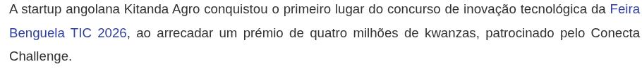
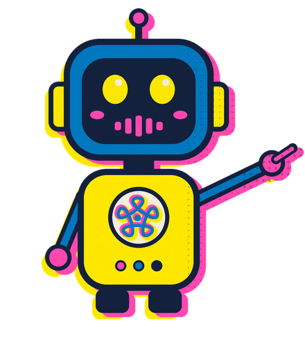
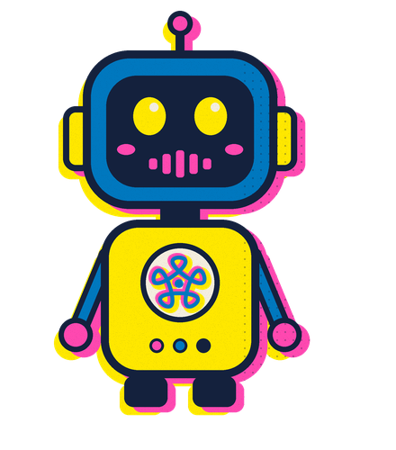

Kanda IA
Gerado por IA

Kanda IA · 18 nov 2026
Benguela TIC 2026
1.º lugar · Kitanda Agro
4 milhões
kwanzas · Conecta Challenge
A plataforma da Kitanda Agro
Liga pequenos produtores agrícolas a supermercados, hotéis e cantinas.
Kukula · 3.º lugar
2 milhões
kwanzas · aplicação com IA
60 startups
cerca de · Benguela
12 a 14 de novembro · Largo de África




Bip!





Bom dia, eu sou o Kandinho. Hoje: Benguela TIC 2026.
Segundo o PTI, a Kitanda Agro venceu, com 4 milhões de kwanzas.
Liga pequenos produtores a supermercados, hotéis e cantinas.
A Kukula, com uma aplicação de gestão agropecuária com IA, ficou em terceiro, com 2 milhões.
Cerca de 60 startups, de 12 a 14 de novembro, em Benguela.
Fora de Luanda também se constrói. Mais em kandaia.ao.